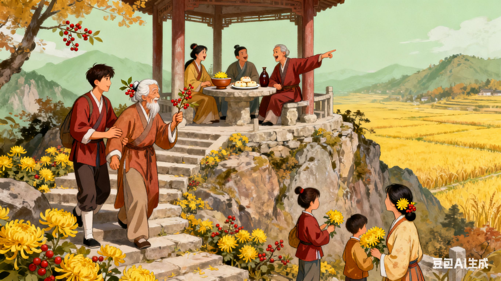

重阳节：登高望远，敬老爱老
重阳节在农历九月初九，“九” 为阳数，故称为 “重阳”。重阳节自古以来就有登高望远、插茱萸、赏菊花、饮菊花酒等习俗，同时，重阳节也是中国的 “老人节”，承载着敬老爱老的传统美德。 重阳节的起源可追溯至战国时期，到了唐代，重阳节被正式定为节日，此后，重阳节的习俗历代相沿，流传至今。重阳节的核心习俗是 “登高”，相传重阳节登高可以避灾避祸。每到重阳节，人们会登上高山、高塔等高处，俯瞰美景，呼吸新鲜空气，感受大自然的壮美。登高不仅是一种体育锻炼，更是一种对美好生活的向往与追求。 “插茱萸” 也是重阳节的重要习俗。茱萸是一种常绿乔木，具有驱虫辟邪、消灾祈福的作用。重阳节当天，人们会采摘茱萸的枝叶或果实，插在头上或佩戴在身上，祈求平安健康。此外，重阳节还有 “赏菊花”“饮菊花酒” 的习俗。菊花是秋季的代表性花卉，象征着坚韧不拔、高洁傲岸的品格。重阳节赏菊花，欣赏菊花的美丽与芬芳，感受秋季的韵味；饮菊花酒则是因为菊花具有清热解毒、延年益寿的功效，人们认为重阳节饮菊花酒可以健康长寿。 随着时代的发展，重阳节被赋予了新的内涵，成为了 “老人节”。在这一天，人们会向家中的老人表达敬意与关爱，陪老人聊天、散步、聚餐，为老人送上节日的祝福与礼物。同时，社会各界也会举办各种敬老活动，如免费为老人体检、组织老人出游等，弘扬敬老爱老的传统美德，营造尊老敬老的社会氛围。